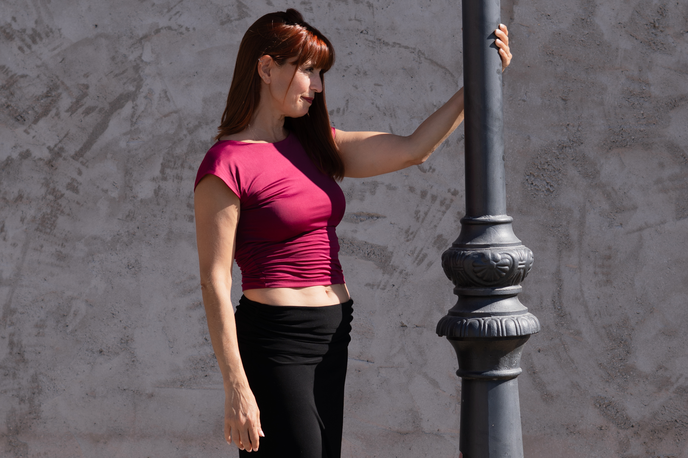
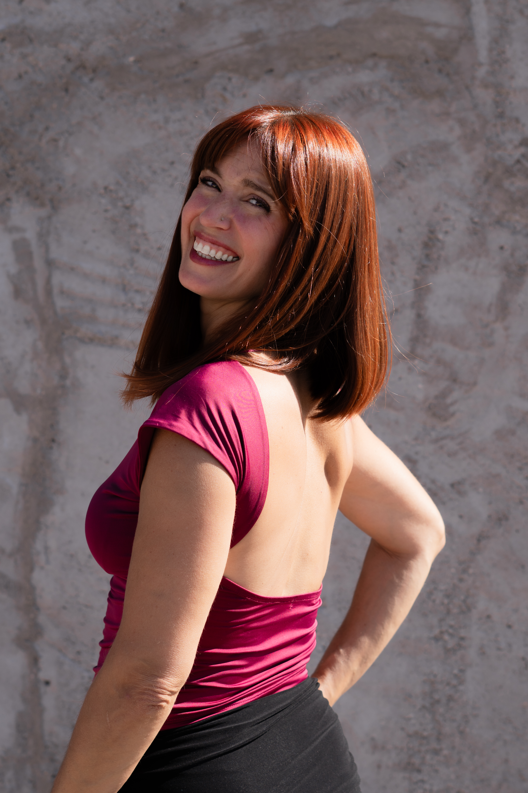

Cuando empecé la escuela primaria, mi mamá descubrió que por las tardes se impartían clases de ballet en el mismo colegio. Sin saberlo, ese sería el comienzo de un viaje que me acompañaría durante toda la vida, lleno de aprendizaje, práctica y disciplina.
Cada final de curso participábamos en un festival donde compartíamos con nuestras familias todo lo que habíamos aprendido, interpretando obras como El lago de los cisnes o La bella durmiente. Aquellas primeras experiencias sobre el escenario despertaron en mí una pasión que nunca dejó de crecer.


Mi historia con la danza, comenzó siendo muy pequeña. Cuando empecé la escuela primaria, mi mamá descubrió que por las tardes se impartían clases de ballet en el mismo colegio. Sin saberlo, ese sería el comienzo de un viaje que me acompañaría durante toda la vida, lleno de aprendizaje, práctica y disciplina. Cada final de curso participábamos en un festival donde compartíamos con nuestras familias todo lo que habíamos aprendido, interpretando obras como El lago de los cisnes o La bella durmiente. Aquellas primeras experiencias sobre el escenario, despertaron en mí una pasión que nunca dejó de crecer. Con el deseo de profundizar en mi formación, audicioné para ingresar en la Escuela Nacional de Danzas de Buenos Aires (Argentina). Allí recibí una educación artística integral, orientada tanto a la interpretación como a la enseñanza, la exploración del movimiento y la creación coreográfica. Mi formación se complementó con asignaturas como música, francés y expresión corporal enotras, que ampliaron mi mirada sobre el arte y la danza. Más adelante continué mis estudios en el Profesorado Nacional de Danzas, incorporando conocimientos de pedagogía y psicología que me permitieron comprender mejor los procesos de aprendizaje. Aprendí a adaptar la enseñanza a cada etapa de la vida, desarrollando herramientas para acompañar a cada alumno con empatía, respeto y sensibilidad. Al finalizar mis estudios obtuve el título de Profesora Nacional de Danzas Clásicas y Contemporáneas. Ese mismo año surgió una nueva oportunidad: una audición para formar parte del Ballet Folklórico Nacional de Argentina. Tras dos intensas jornadas de pruebas, fui seleccionada y comenzó otra etapa profundamente enriquecedora. Integrar una compañía de más de veinticinco bailarines me enseñó el valor del trabajo colectivo, la conciencia del espacio, la precisión del movimiento grupal y la importancia de transmitir emociones al público en cada escena.
Fue precisamente dentro del Ballet Folklórico Nacional donde dí mis primeros pasos en el tango. Gracias a las coreografías creadas por Carlos Rivarola descubrí un universo que despertó inmediatamente mi curiosidad. Aquella primera experiencia me impulsó a seguir profundizando en esta danza, formándome con grandes maestros como Osvaldo Zotto y Lorena Ermocida, Corina de la Rosa y Julio Balmaceda, Mingo Pugliese y Graciela González, entre otros. Con el tiempo sentí que había llegado el momento de orientar mi carrera hacia el tango. Audicioné para el musical Tanguera y fui seleccionada como cover del papel principal. Durante un año formé parte de la temporada en el Teatro Nacional de Buenos Aires y posteriormente viajé con la compañía a Chile y a España. En Madrid participamos en la inauguración del Teatro Alcalá, donde realizamos una temporada de cuatro meses. Fue entonces cuando decidí quedarme en España. Desde el 2003, me he dedicado con compromiso a la enseñanza e interpretración del tango. Con una identidad artística caracterizada por la elegancia y la expresividad, junto a Juan Manuel Nieto, he tenido el placer de participar en espectáculos como Conceptango, Tango mío y Piazollisimo, entre otros, e impartiendo seminarios en festivales nacionales (Sitges, Granada, Oviedo...) e internacionales (Bonn, Tarbes, Niza, Saint Raphael, Caen...). Como profesional y mujer apasionada por el tango, me mueve la ilusión de seguir investigando el tango desde una mirada más profunda: su conexión, el movimiento, la biomecánica del cuerpo y las infinitas posibilidades de comunicación que nacen en el abrazo. Hoy mi mayor motivación es compartir toda la experiencia acumulada durante décadas de formación, escenarios y enseñanza. Creo en un aprendizaje basado en la escucha, la curiosidad y el respeto por el proceso de cada persona. Mi objetivo es ofrecer un espacio donde cada alumno pueda descubrir el tango con confianza, desarrollar su propia identidad y disfrutar del camino tanto como del resultado.